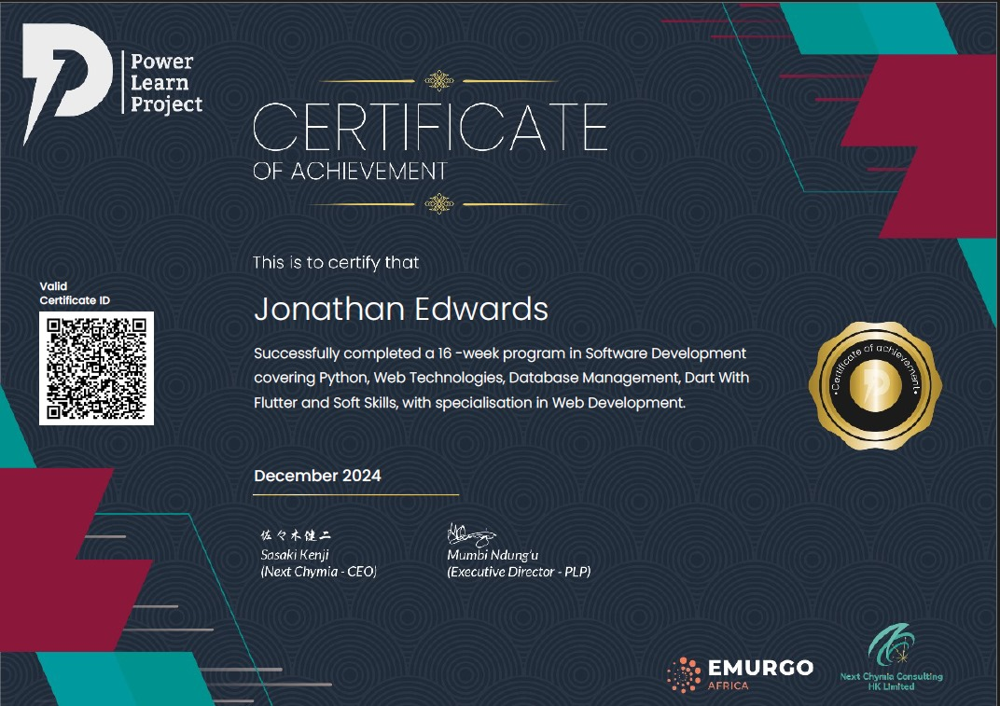

My Skills in Web Development
Exposure working with html and css for frontend development and javascript and python for backend development
PLP Academy Certification
This certification from PLP Academy acknowledges my skills and expertise in web development. I have completed several modules focused on front-end, back-end, and full-stack development, equipping me with the ability to build dynamic, interactive, and responsive websites.
My Web Development Projects
Graph Plotter Website
This website allows users to input mathematical equations and plots the graphs dynamically. Built with JavaScript and various graphing libraries, it's a tool for students and professionals alike.
Visit SiteWorkfinder
Workfinder is a job search platform that helps users find relevant job listings by filtering them based on various criteria such as location, salary, and job type. Built with HTML, CSS, JavaScript, and integrated with job APIs.
Visit SiteExpense Tracker
The Expense Tracker is an application that helps users monitor their spending, categorize expenses, and set budgets. Built using JavaScript and local storage, this tool is ideal for personal finance management.
Visit SiteOptySearchDigital
Co-founder at OptySearchDigital, a digital marketing company focused on optimizing online presence for businesses through SEO, content strategy, and data-driven marketing campaigns.
Visit Site